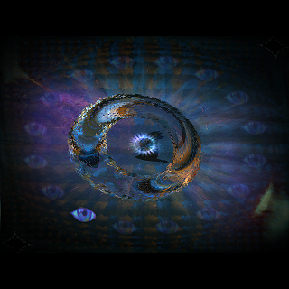

Julien Verneuil
Full Stack Developer from
Néronville
, France
CV / Resume (.pdf)
software
library
games
creative code
contributions
Render agnostic graphics library with parallelism support
https://github.com/grz0zrg/fbg
C
2D Graphics
Parallelism
Image processing
Embedded system
CRUD jQuery Kanban plugin (latest)
https://www.fsynth.com/lab/kanban/
Front-End
Back-End
CRUD
jQuery
JavaScript
Plugin
Web-based sonogram resynthesis using additive synthesis
https://github.com/grz0zrg/splayer
Front-End
JavaScript
HTML5
WebAudio
Canvas
Complete collection of lightweight vanilla JavaScript UI widgets
https://github.com/grz0zrg/wui
Front-End
Vanilla
JavaScript
Widgets
3D Spiral Gallery with vanilla JavaScript
https://www.onirom.fr/get/HTML5/spiral/index.html
Front-End
JavaScript
3D Gallery
ThreeJS
Irrlicht Spherical Terrain Scene Node
http://irrlicht.sourceforge.net/forum/viewtopic.php?f=9&t=42722
C/C++
3D
Irrlicht
Irrlicht Tron 2.0 Glow graphical effect
.ZIP (2.7MB) - Windows - With SRC
C/C++
3D
Irrlicht
Fast web-based lexical analyzer
https://github.com/grz0zrg/jsb
Vanilla
JavaScript
Finite state automaton
JPEG algorithm
https://www.openprocessing.org/sketch/580526
Processing
Algorithm
Images processing algorithms
https://www.onirom.fr/get/processing/image_processing.pde
Processing
Algorithm
Java

C/C++ OpenGL 3.3+ demos framework
https://github.com/grz0zrg/Mammoth3D
C
OpenGL 3.3+
Graphics engine
Framework
C OpenGL ES 1.1 lightweight library
https://github.com/grz0zrg/M3D
C
OpenGL 1.1
Graphics engine
Hash Table
Embedded system
C++ 2D Accelerated Game framework
https://github.com/grz0zrg/ES
C++
OpenGL 2
2D Game engine
Embedded system
Construct 2 deflate plugin
https://www.scirra.com/forum/viewtopic.php?f=153&t=75040&sid=a6d4f87ca01df263e1a012062e1680db
Construct 2
JavaScript